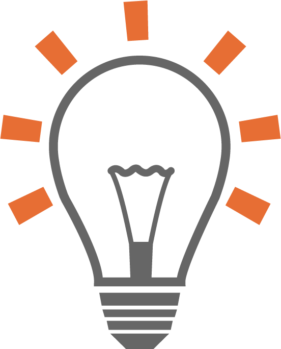
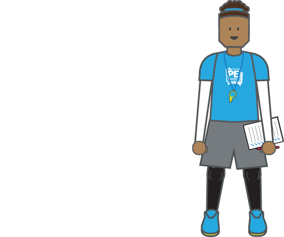
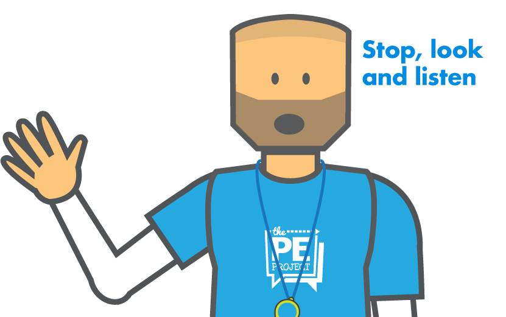
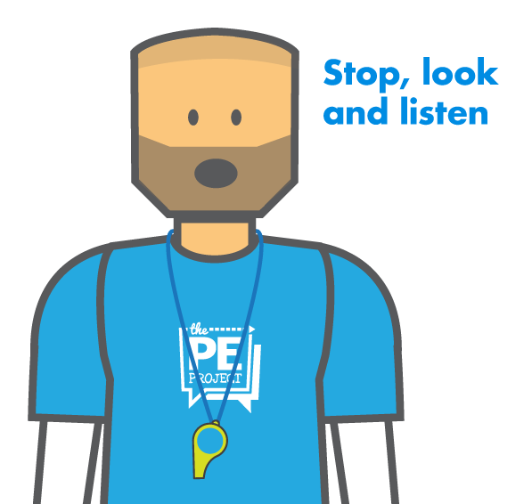
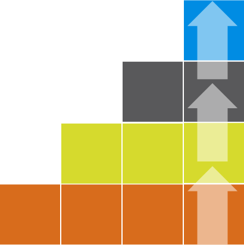
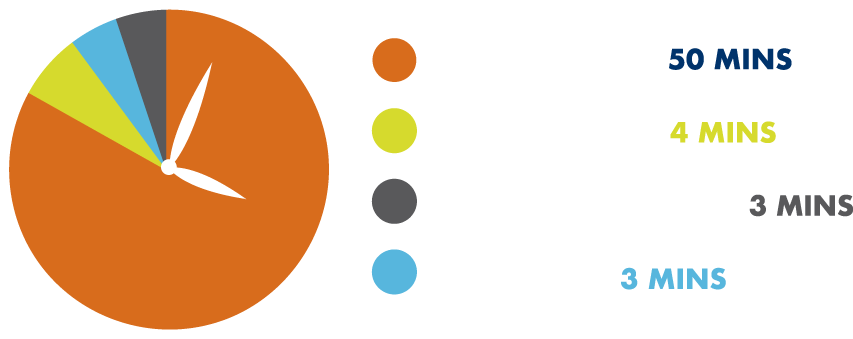
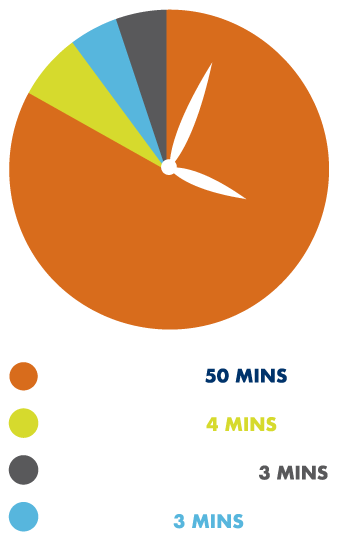
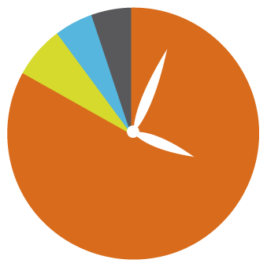

In order to maximize learning and to be an effective PE teacher, lessons should be planned so that pupils spend as much time as possible on tasks and as little time as possible on organization and management [1, 2, 3]. In order to keep in line with the topic, there are four key areas of consideration:
- Establishing routines
- Giving Instructions
- Planning for progression
- Activity Selection

From the outset of the school year, and each new topic or term, it is hugely beneficial to establish and reinforce efficient routines with your classes. This begins and ends with how you expect students to enter and exit the changing rooms and everything in between, including:

- Taking the register
- Entering and leaving the PE space
- Instructions/demonstrations
- Collecting and returning equipment
- Gaining attention
- Organizing groups
- Transitioning from activities
Therefore with so many factors to consider it is obvious why establishing good routines are beneficial for maximizing learning time [4, 5]. In order to do so, it is recommended that at the start of new unit or term that time is taken to plan these routines which can be reinforced in subsequent lessons.


.png)
One of the most common obstacles for maximizing pupils time physically engaged in tasks is excessive teacher talk [1]. Teacher talk should be concise and to the point [1, 4]. Avoid talking longer than 3-minutes, and if possible make just one point at a time [4]. This does not mean that you should rush through instructions nor talk over students who are chatting as this undermines the teacher’s authority. Instead, develop a familiar phrase to gain attention such as “Stop, look and listen” or a rhythmical clap pattern, then when students are quiet and listening make your instructions short, sharp and punchy! [1, 4]
A great way to do this is to drip-feed in your teaching points throughout an activity or lesson. Often as teachers we can fall into the habit of explaining in too much detail how something should be done. Rather than talking for several minutes to an inactive audience, get pupils started on the activity where they can first demonstrate what they already know. Then, freeze the activity, highlight a key teaching point and carry on. Student activity levels will be higher, and you will see them make clear progress in their learning.
Another important element for maximizing pupils learning time and behavior is planning for progression. A good PE lesson should have a balance of individual, cooperative and competitive activities with appropriate progression through tasks [1, 4]. This requires effective pacing by deciding what is considered sufficient time for pupils to make progress without getting bored [1]. This could be anywhere from 3-15 minutes depending upon the activity and the age of students (for longer activities, ).

When planning and delivering PE lessons, it is important to select activities that maximise student engagement and help develop specific skills. There are endless activities that you can choose from for each sport, and many can be adapted and used across different sports. For example, a fun passing game in soccer could be adapted and replicated for basketball, hockey and other invasion games. When choosing such activities, you want as many pupils as possible taking part. Consider the following:
Max. Participation Activities - There are many wonderful PE activities and games where all students are taking part and having as many goes as possible. For ball sports, select activities where students have a ball each or in pairs where they can explore and develop confidence in a non-competitive environment. Then progress to challenges which increase pressure and help prepare students for more game-like conditions by adding 2 or 3 defenders. Of note, avoid elimination activities where once students are ‘out’, they can’t come back into the game. These types of activities lower student engagement, motivation, and confidence.
Short Line Drills – Line drills (aka relay activities) are extremely common in PE and sports coaching, and they have value. However, too often relay activities are used with long lines of 7 or more students, and only a few teams. This is not the most efficient use of time and minimizes student participation. For line drills, have students work in lines of two or three - resulting in a work-rest ratio of 1:1 or 1:2. Any ratios greater than these are not the most efficient. This may mean setting up extra cones (Top Tip: only set up one line of cones for the middle group, then give a pile of cones to each group and have them set up) and possibly using the length of the gym rather than the width. By having shorter line drills your students will have more attempts, be more engaged, make greater improvements, and you will have less behaviour problems.
Small-Sided Games – One of the best ways to improve student engagement in PE is by playing a scaled-down version of the game (e.g., rather than 11v11 soccer play 5v5). For games like basketball, you can play half-court games which means you can have four teams playing on one court at the same time rather than two teams playing full-court, whilst the other two teams are sitting out watching. As much as possible, avoid having students sitting out and watching. With a little bit of forward thinking and planning, you can most certainly maximise student engagement by planning for an adapted version of the game. This does require students to ‘officiate their own games’ by calling their own fouls, violations etc. which is a great way to increase student responsibility, independence and many other characteristics.
To find more activities that maximise student engagement check out our learning resources HERE.




Maximising learning time can always be improved even by the most experienced PE teacher and will evolve like the ever-changing face of our students. Yet it is advantageous to continually reflect on our teaching and identify situations where a different approach may have worked better [3].
Student activity 50 mins; Demonstrations 4 mins; Question and answer 3mins; Teacher talk 3 mins
References
- Bailey, R. (2001) Teaching Physical Education: A handbook for Primary and Secondary School Teachers. London: Kogan Page
- Wragg, E.C. (1993) Primary Teaching Skills. London: Routledge
- Lawrence, J. & Whitehead, M. (2015) In Capel, S., & Whitehead, M. (ed.) Learning to Teach Physical Education in the Secondary School: A companion to school experience. Routledge: Oxon. Pp.156-170
- Stidder, G. & Hayes, S. (2011) The Really Useful Physical Education Book: Learning & teaching across the 7-14 age range. London: Routledge
- Grout, H. & Long, G. (2009) Improving Teaching & Learning in Physical Education. Berkshire: Open University Press